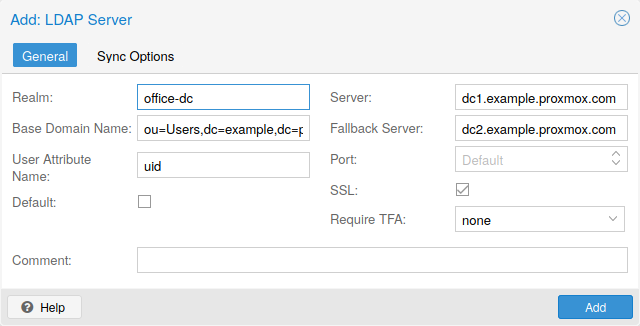
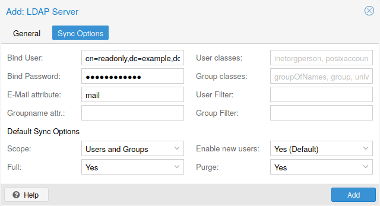

As Proxmox VE users are just counterparts for users existing on some external
realm, the realms have to be configured in /etc/pve/domains.cfg.
The following realms (authentication methods) are available:
adduser. If PAM users exist
on the Proxmox VE host system, corresponding entries can be added to Proxmox VE, to allow
these users to log in via their system username and password.
/etc/pve/priv/shadow.cfg. Passwords are hashed using the SHA-256 hashing
algorithm. This is the most convenient realm for small-scale (or even
mid-scale) installations, where users do not need access to anything outside of
Proxmox VE. In this case, users are fully managed by Proxmox VE and are able to change
their own passwords via the GUI.
As Linux PAM corresponds to host system users, a system user must exist on each node which the user is allowed to log in on. The user authenticates with their usual system password. This realm is added by default and can’t be removed.
Password changes via the GUI or, equivalently, the /access/password API
endpoint only apply to the local node and not cluster-wide. Even though Proxmox VE
has a multi-master design, using different passwords for different nodes can
still offer a security benefit.
In terms of configurability, an administrator can choose to require two-factor authentication with logins from the realm and to set the realm as the default authentication realm.
The Proxmox VE authentication server realm is a simple Unix-like password store. The realm is created by default, and as with Linux PAM, the only configuration items available are the ability to require two-factor authentication for users of the realm, and to set it as the default realm for login.
Unlike the other Proxmox VE realm types, users are created and authenticated entirely through Proxmox VE, rather than authenticating against another system. Hence, you are required to set a password for this type of user upon creation.
You can also use an external LDAP server for user authentication (for example,
OpenLDAP). In this realm type, users are searched under a Base Domain Name
(base_dn), using the username attribute specified in the User Attribute Name
(user_attr) field.
A server and optional fallback server can be configured, and the connection can be encrypted via SSL. Furthermore, filters can be configured for directories and groups. Filters allow you to further limit the scope of the realm.
For instance, if a user is represented via the following LDIF dataset:
# user1 of People at ldap-test.com dn: uid=user1,ou=People,dc=ldap-test,dc=com objectClass: top objectClass: person objectClass: organizationalPerson objectClass: inetOrgPerson uid: user1 cn: Test User 1 sn: Testers description: This is the first test user.
The Base Domain Name would be ou=People,dc=ldap-test,dc=com and the user
attribute would be uid.
If Proxmox VE needs to authenticate (bind) to the LDAP server before being
able to query and authenticate users, a bind domain name can be
configured via the bind_dn property in /etc/pve/domains.cfg. Its
password then has to be stored in /etc/pve/priv/realm/<realmname>.pw
(for example, /etc/pve/priv/realm/my-ldap.pw). This file should contain a
single line with the raw password.
To verify certificates, you need to set capath. You can set it either
directly to the CA certificate of your LDAP server, or to the system path
containing all trusted CA certificates (/etc/ssl/certs).
Additionally, you need to set the verify option, which can also be done over
the web interface.
The main configuration options for an LDAP server realm are as follows:
Realm (realm): The realm identifier for Proxmox VE users
Base Domain Name (base_dn): The directory which users are searched under
User Attribute Name (user_attr): The LDAP attribute containing the
username that users will log in with
Server (server1): The server hosting the LDAP directory
Fallback Server (server2): An optional fallback server address, in case
the primary server is unreachable
Port (port): The port that the LDAP server listens on
In order to allow a particular user to authenticate using the LDAP server, you must also add them as a user of that realm from the Proxmox VE server. This can be carried out automatically with syncing.
To set up Microsoft AD as a realm, a server address and authentication domain need to be specified. Active Directory supports most of the same properties as LDAP, such as an optional fallback server, port, and SSL encryption. Furthermore, users can be added to Proxmox VE automatically via sync operations, after configuration.
As with LDAP, if Proxmox VE needs to authenticate before it binds to the AD server,
you must configure the Bind User (bind_dn) property. This property is
typically required by default for Microsoft AD.
The main configuration settings for Microsoft Active Directory are:
Realm (realm): The realm identifier for Proxmox VE users
Domain (domain): The AD domain of the server
Server (server1): The FQDN or IP address of the server
Fallback Server (server2): An optional fallback server address, in case
the primary server is unreachable
Port (port): The port that the Microsoft AD server listens on
Microsoft AD normally checks values like usernames without case
sensitivity. To make Proxmox VE do the same, you can disable the default
case-sensitive option by editing the realm in the web UI, or using the CLI
(change the ID with the realm ID):
pveum realm modify ID --case-sensitive 0

It’s possible to automatically sync users and groups for LDAP-based realms (LDAP
& Microsoft Active Directory), rather than having to add them to Proxmox VE manually.
You can access the sync options from the Add/Edit window of the web interface’s
Authentication panel or via the pveum realm add/modify commands. You can
then carry out the sync operation from the Authentication panel of the GUI or
using the following command:
pveum realm sync <realm>
Users and groups are synced to the cluster-wide configuration file,
/etc/pve/user.cfg.
If the sync response includes user attributes, they will be synced into the
matching user property in the user.cfg. For example: firstname or
lastname.
If the names of the attributes are not matching the Proxmox VE properties, you can
set a custom field-to-field map in the config by using the sync_attributes
option.
How such properties are handled if anything vanishes can be controlled via the sync options, see below.
The configuration options for syncing LDAP-based realms can be found in the
Sync Options tab of the Add/Edit window.
The configuration options are as follows:
Bind User (bind_dn): Refers to the LDAP account used to query users
and groups. This account needs access to all desired entries. If it’s set, the
search will be carried out via binding; otherwise, the search will be carried
out anonymously. The user must be a complete LDAP formatted distinguished name
(DN), for example, cn=admin,dc=example,dc=com.
user.cfg are synced. Groups are synced with -$realm attached to the
name, in order to avoid naming conflicts. Please ensure that a sync does not
overwrite manually created groups.
User classes (user_classes): Objects classes associated with users.
Group classes (group_classes): Objects classes associated with groups.
E-Mail attribute: If the LDAP-based server specifies user email addresses,
these can also be included in the sync by setting the associated attribute
here. From the command line, this is achievable through the
--sync_attributes parameter.
User Filter (filter): For further filter options to target specific users.
Group Filter (group_filter): For further filter options to target specific
groups.
Filters allow you to create a set of additional match criteria, to narrow down the scope of a sync. Information on available LDAP filter types and their usage can be found at ldap.com.

In addition to the options specified in the previous section, you can also configure further options that describe the behavior of the sync operation.
These options are either set as parameters before the sync, or as defaults via
the realm option sync-defaults-options.
The main options for syncing are:
Scope (scope): The scope of what to sync. It can be either users,
groups or both.
Enable new (enable-new): If set, the newly synced users are enabled and
can log in. The default is true.
Remove Vanished (remove-vanished): This is a list of options which, when
activated, determine if they are removed when they are not returned from
the sync response. The options are:
ACL (acl): Remove ACLs of users and groups which were not returned
returned in the sync response. This most often makes sense together with
Entry.
Entry (entry): Removes entries (i.e. users and groups) when they are
not returned in the sync response.
Properties (properties): Removes properties of entries where the user
in the sync response did not contain those attributes. This includes
all properties, even those never set by a sync. Exceptions are tokens
and the enable flag, these will be retained even with this option enabled.
Preview (dry-run): No data is written to the config. This is useful if you
want to see which users and groups would get synced to the user.cfg.
Certain characters are reserved (see RFC2253) and cannot be easily used in attribute values in DNs without being escaped properly.
Following characters need escaping:
#) at the beginning
,)
+)
")
/)
<>)
;)
=)
To use such characters in DNs, surround the attribute value in double quotes.
For example, to bind with a user with the CN (Common Name) Example, User, use
CN="Example, User",OU=people,DC=example,DC=com as value for bind_dn.
This applies to the base_dn, bind_dn, and group_dn attributes.
Users with colons and forward slashes cannot be synced since these are reserved characters in usernames.
The main OpenID Connect configuration options are:
Issuer URL (issuer-url): This is the URL of the authorization server.
Proxmox VE uses the OpenID Connect Discovery protocol to automatically configure
further details.
While it is possible to use unencrypted http:// URLs, we strongly recommend to
use encrypted https:// connections.
Realm (realm): The realm identifier for Proxmox VE users
Client ID (client-id): OpenID Client ID.
Client Key (client-key): Optional OpenID Client Key.
Autocreate Users (autocreate): Automatically create users if they do not
exist. While authentication is done at the OpenID server, all users still need
an entry in the Proxmox VE user configuration. You can either add them manually, or
use the autocreate option to automatically add new users.
Username Claim (username-claim): OpenID claim used to generate the unique
username (subject, username or email).
Autocreate Groups (groups-autocreate): Create all groups in the claim
instead of using existing PVE groups (default behavior).
Groups Claim (groups-claim): OpenID claim used to retrieve the groups from
the ID token or userinfo endpoint.
Overwrite Groups (groups-overwrite): Overwrite all groups assigned to user
instead of appending to existing groups (default behavior).
The OpenID Connect specification defines a single unique attribute
(claim in OpenID terms) named subject. By default, we use the
value of this attribute to generate Proxmox VE usernames, by simple adding
@ and the realm name: ${subject}@${realm}.
Unfortunately, most OpenID servers use random strings for subject, like
DGH76OKH34BNG3245SB, so a typical username would look like
DGH76OKH34BNG3245SB@yourrealm. While unique, it is difficult for
humans to remember such random strings, making it quite impossible to
associate real users with this.
The username-claim setting allows you to use other attributes for
the username mapping. Setting it to username is preferred if the
OpenID Connect server provides that attribute and guarantees its
uniqueness.
Another option is to use email, which also yields human readable
usernames. Again, only use this setting if the server guarantees the
uniqueness of this attribute.
Specifying the groups-claim setting in the OpenID configuration enables group
mapping functionality. The data provided in the groups-claim should be
a list of strings that correspond to groups that a user should be a member of in
Proxmox VE. To prevent collisions, group names from the OpenID claim are suffixed
with -<realm name> (e.g. for the OpenID group name my-openid-group in the
realm oidc, the group name in Proxmox VE would be my-openid-group-oidc).
Any groups reported by the OpenID provider that do not exist in Proxmox VE are
ignored by default. If all groups reported by the OpenID provider should exist
in Proxmox VE, the groups-autocreate option may be used to automatically create
these groups on user logins.
By default, groups are appended to the user’s existing groups. It may be
desirable to overwrite any groups that the user is already a member in Proxmox VE
with those from the OpenID provider. Enabling the groups-overwrite setting
removes all groups from the user in Proxmox VE before adding the groups reported by
the OpenID provider.
In some cases, OpenID servers may send groups claims which include invalid characters for Proxmox VE group IDs. Any groups that contain characters not allowed in a Proxmox VE group name are not included and a warning will be sent to the logs.
Query userinfo endpoint (query-userinfo): Enabling this option requires
the OpenID Connect authenticator to query the "userinfo" endpoint for claim
values. Disabling this option is useful for some identity providers that do not
support the "userinfo" endpoint (e.g. ADFS).
Here is an example of creating an OpenID realm using Google. You need to
replace --client-id and --client-key with the values
from your Google OpenID settings.
pveum realm add myrealm1 --type openid --issuer-url https://accounts.google.com --client-id XXXX --client-key YYYY --username-claim email
The above command uses --username-claim email, so that the usernames on the
Proxmox VE side look like example.user@google.com@myrealm1.
Keycloak (https://www.keycloak.org/) is a popular open source Identity
and Access Management tool, which supports OpenID Connect. In the following
example, you need to replace the --issuer-url and --client-id with
your information:
pveum realm add myrealm2 --type openid --issuer-url https://your.server:8080/realms/your-realm --client-id XXX --username-claim username
Using --username-claim username enables simple usernames on the
Proxmox VE side, like example.user@myrealm2.
You need to ensure that the user is not allowed to edit the username setting themselves (on the Keycloak server).